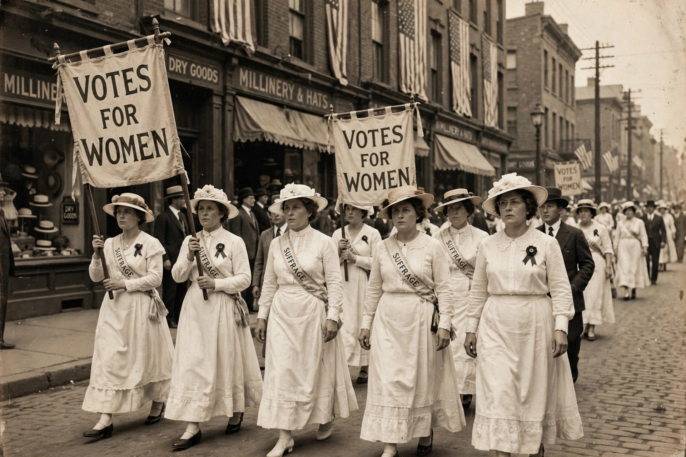

The Nineteenth Amendment to the United States Constitution prohibits the United States and its states from denying the right to vote to citizens on the basis of sex, in effect recognising women's right to vote. It was adopted on 18 August 1920, when Tennessee became the 36th state to ratify it, and certified on 26 August 1920.
"The right of citizens of the United States to vote shall not be denied or abridged by the United States or by any State on account of sex. Congress shall have power to enforce this article by appropriate legislation."
The organised movement for women's suffrage in the United States is conventionally dated from the Seneca Falls Convention of 1848. After the Civil War, activists split over strategy between state-by-state campaigns and a federal constitutional amendment. Suffrage organisations — the National American Woman Suffrage Association under leaders such as Susan B. Anthony and Carrie Chapman Catt, and Alice Paul's more militant National Woman's Party, whose "Silent Sentinels" picketed the White House from 1917 — combined to press the demand. Individual states moved first: Wyoming enfranchised women in 1869 and entered the Union with women's suffrage in 1890, and by 1919 women could vote in presidential elections in a majority of states. Women's contribution to the war effort in the First World War strengthened their case, and President Woodrow Wilson publicly endorsed the amendment in 1918.
The amendment — its text essentially unchanged from the version first introduced in Congress in 1878 — passed the House of Representatives on 21 May 1919 and the Senate on 4 June 1919. Ratification proceeded rapidly through most states but stalled one short of the required 36. In Tennessee, the final vote in the state house on 18 August 1920 turned on the youngest legislator, Harry T. Burn, who changed his vote in favour after receiving a letter from his mother urging him to "be a good boy" and support suffrage. Secretary of State Bainbridge Colby certified the amendment on 26 August 1920, a date now commemorated as Women's Equality Day. In Leser v. Garnett (1922), the Supreme Court unanimously rejected challenges to its validity.
Millions of women voted for the first time in the 1920 election, and the amendment remains the largest single expansion of the American electorate. Yet formal enfranchisement did not end disfranchisement in practice: Black women in the Jim Crow South, and many Native American and Asian-American women, continued to face poll taxes, literacy tests and other barriers until the Voting Rights Act of 1965 and related reforms.
Emmeline Pankhurst · Voter suppression · Twenty-second Amendment